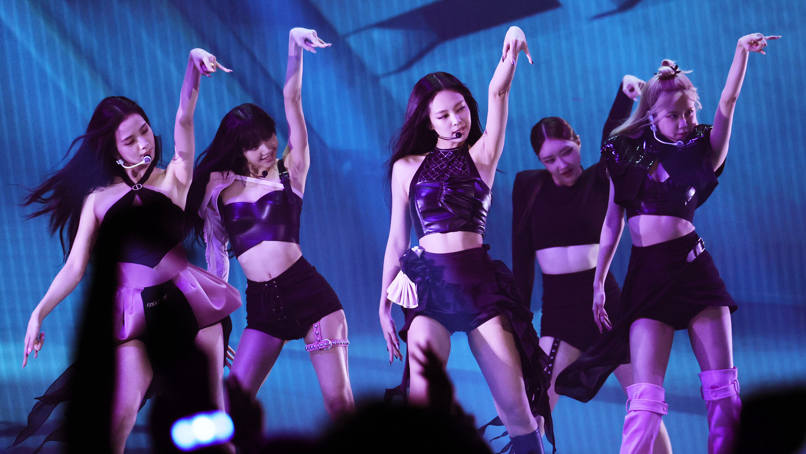

fans are good. fans are passionate and mostly nice. the k-pop fandom helped me through an identity crisis. but some fans are toxic, obsessive, and immature. the reputation of the k-pop fandom includes doxxing, harassment, sending death threats, fan-wars, and anti-fans. it's not really k-pop's fault, it's just that there are bad people on the internet who shouldn't be. of course idols don't condone hate, but there's no denying that some fans of k-pop have done bad things. some "fans" also publicly bully idols, expressing their hate towards people who don't know they exist. the industry doesn't do much about this.
when men show off their body it's cool, but when women do it it's inappropriate. when men act cute it's adorable, when women act cute they're called pick-me girls. when minors are in girl groups people call it inappropriate, but when minors are in boy groups they are sexualized. when men put on an indifferent expression they are called sexy, but when women put on the same face they are called heartless. i could go on. "...when the hugely popular group Girls’ Generation (SNSD) batted their eyes at a boy band during a television variety show in 2008, this prompted fans to publicly humiliate them at that year’s annual Dream Concert, where audience members typically show performers their support by creating oceans of light with glow sticks. When SNSD took to the stage, the audience greeted them with dead silence and pitch darkness for the duration of their set."
k-pop has created unrealistic beauty standards, and has sometimes made me feel "not korean enough." if people's only exposure to korean people is k-pop, i certainly do not fit the stereotype and fear that i don't seem korean because i don't look flashy and cool like famous idols. korea is not pretty, korea is not k-pop, korea is a very flawed country.
people enjoy k-pop and are exposed to other parts of korean culture, such as korean dramas, food, fashion, makeup, etc. however, they don't uplift asian voices and do not care about actual korean people. it seems like asian-fishing is a trend these days, even though asian hate is on the rise?? this might be straying from the actual k-pop industry, but i just wanted to point it out.